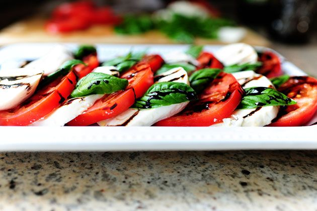

Easy Caprese Salad
Home

It's so simple, fresh but oh so refreshing and delicious.
Caprese Salad is a vibrant and refreshing masterpiece that captures the
essence of Italian flavors. This simple yet elegant dish showcases the
harmony between juicy tomatoes, creamy mozzarella, and fragrant
basil leaves. Each bite is a burst of freshness, with the tomatoes
offering a luscious sweetness, the mozzarella providing a creamy and
delicate richness, and the basil lending its aromatic charm.
Drizzled with extra virgin olive oil and a sprinkle of salt, this
timeless salad is a celebration of simplicity and the finest ingredients,
making it a perfect appetizer or a light, satisfying meal.
Ingredients
- 2 c. balsamic vinegar
- 3 whole ripe tomatoes, sliced thick
- 12 oz. mozzarella cheese, sliced thick
- fresh basil leaves
- olive oil, for drizzling
- kosher salt and freshly ground black pepper
- Bring the balsamic vinegar to a boil over medium-low heat in
a small saucepan. Cook for 10 to 20 minutes, or until the
balsamic has reduced to a thicker glaze. Remove it from the heat
and transfer to a bowl or cruet. Allow to cool.
- When you're ready to serve, arrange tomato and mozzarella slices
on a platter. Arrange basil leaves between the slices. Drizzle
olive oil over the top of the salad, getting a little bit on each
slice. Do the same with the balsamic reduction, making designs
if you want. Store extra balsamic reduction in fridge for a later
use.
- End with a sprinkling of kosher salt and black pepper. Serve as
a lunch, with crusty bread, or serve alongside a beef main course
for dinner.